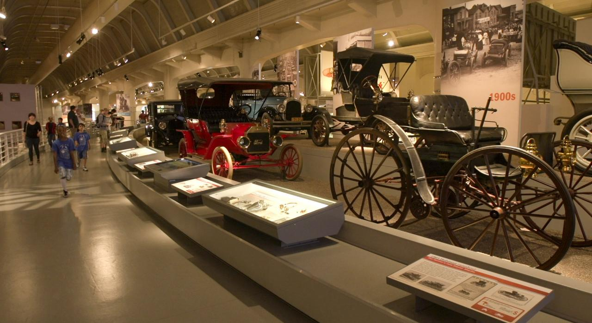

Le skyline de Detroit avec la rivière Detroit

Le musée Henry Ford, un incontournable pour les amateurs d'histoire automobile
Le Detroit Institute of Arts, abritant une riche collection artistique
Explorez Detroit
Detroit, surnommée la Motor City, est en pleine renaissance avec son riche patrimoine automobile et culturel.
Conseils de Voyage
- Visitez le musée Henry Ford pour une immersion dans l'histoire de l'industrie automobile.
- Explorez le Detroit Institute of Arts, abritant des œuvres d'art de renommée mondiale.
- Profitez de la scène musicale dynamique de Detroit dans des clubs emblématiques.